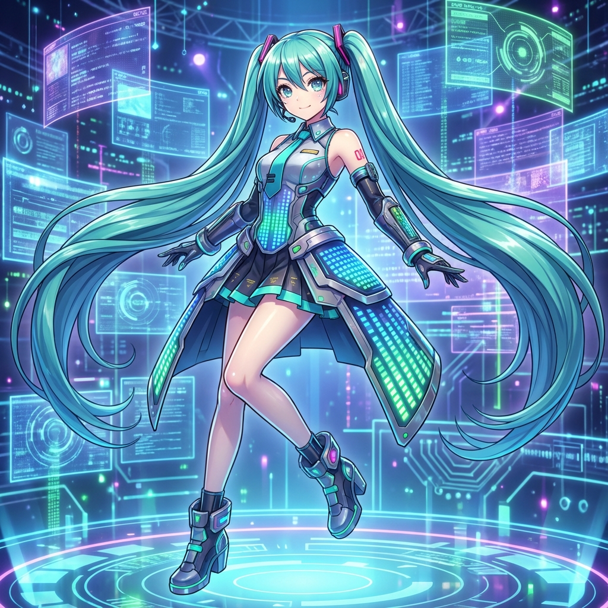
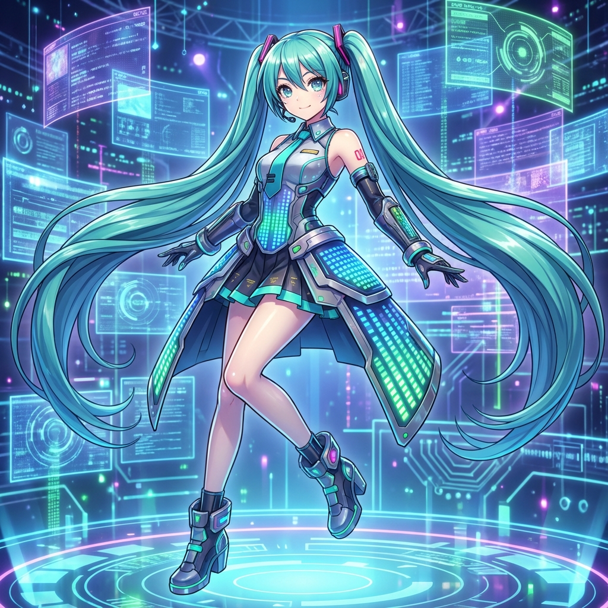

HATSUNE MIKU
El Sonido del Futuro
El Sonido del Futuro
Hatsune Miku (初音ミク) es una librería de voz para el software sintetizador de voz VOCALOID2, VOCALOID3 y VOCALOID4, así como para el software desarrollado por Crypton Future Media, Piapro Studio.
Fue lanzada el 31 de agosto de 2007 y se convirtió en la primera VOCALOID de la serie Character Vocal Series (CV01).
Hatsune Miku no es solo un software, es un fenómeno cultural global. Ha realizado conciertos "en vivo" como una proyección 3D en estadios llenos alrededor del mundo, desde Tokio hasta Los Ángeles. Su imagen ha aparecido en anuncios de Toyota, Google y Domino's Pizza.
Originalmente basada en el motor VOCALOID2 de Yamaha, su voz fue creada a partir de muestras de la actriz de voz japonesa Saki Fujita. El nombre proviene de la fusión de las palabras japonesas para "primero" (hatsu), "sonido" (ne) y "futuro" (miku).
A diferencia de los ídolos pop tradicionales, el repertorio de Miku es creado enteramente por sus fans. Hay más de 100,000 canciones originales de Miku, abarcando géneros desde el J-Pop y Rock hasta la música electrónica y clásica.
Hatsune Miku
31 Agosto 2007
16 años
158 cm
42 kg
Puerro (Negi)